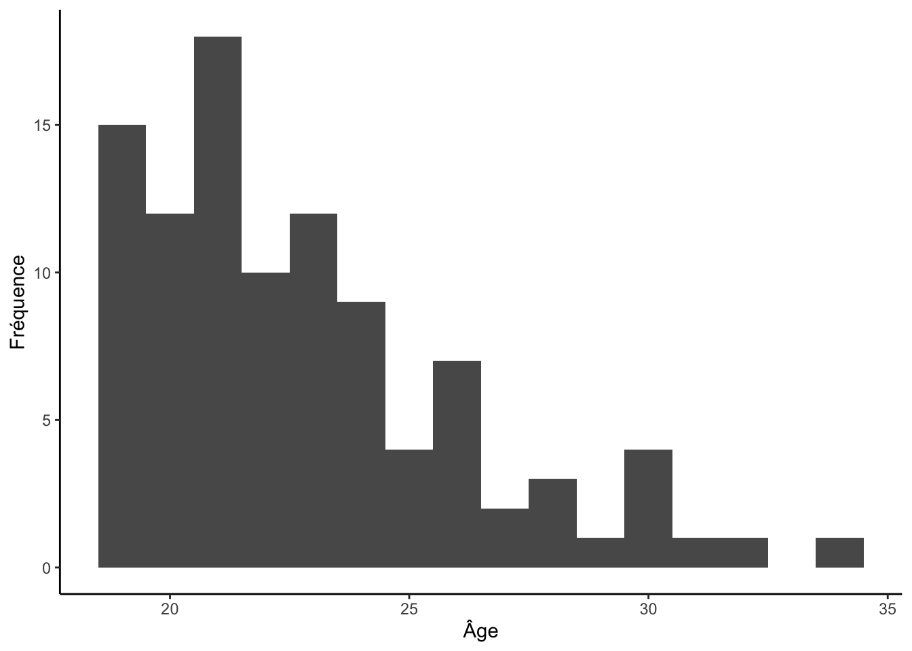

Visualiser les données
Xavier La Rochelle
2023-11-22
Important : Ce guide assume que vous savez comment :
- Rédiger un script
RMarkdown
- Installer et activer des packages
- Importer une base de données
- Préparer des données
Vous pouvez cliquer sur les liens ci-dessus pour consulter les guides associées.
Dans ce guide, nous apprendrons à créer des graphiques pour visualiser des données.
0.1 Nouveau fichier de données!
Les données que nous utiliserons à titre d’exemple dans ce guide
(data_visualisation.csv) ne seront pas les mêmes que celles
des guides précédents (RCC-5323-F-2020-SM_F1.csv). J’aurais
préféré garder le même fichier de données pour tous les guides mais
celui que j’utilisais jusqu’à date ne comprenait qu’une seule variable
continue. Pour pouvoir mettre en relation deux variables continues, je
suis aller chercher un nouveau fichier de données
(data_visualisation.csv).
0.1.1 Importer et préparer les données
Pour vous évitez de tout re-coder, j’ai pris le temps d’écrire la syntaxe nécessaire pour importer et préparer les données. Pour suivre les exemples dans ce guide, vous devrez donc :
- avoir téléchargé le fichier
data_visualisation.csvsur Studium
- noter le
"folder path" - utiliser la syntaxe suivante pour préparer les données dans R :
# Packages
library(readr)
library(tibble)
library(ggplot2)
library(frq)
# Importer les données (data_visualisation.csv)
donnees_brutes <- read_csv("folder path")
# Préparer les données
df <- as_tibble(data.frame(id = 1:nrow(donnees_brutes)))
df$age <- donnees_brutes$Age
df$genre <- factor(donnees_brutes$Genre,
levels = c(1,2),
labels = c("Homme", "Femme"))
df$emotionPositive <- donnees_brutes$PANAS_Pos_Pre
df$symptomesDepressifs <- donnees_brutes$CESD_PreTotalNote: N’oubliez pas de changer le folder path!
Voici à quoi devrait ressembler votre banque de données après l’étape de préparation :
df## # A tibble: 100 × 5
## id age genre emotionPositive symptomesDepressifs
## <int> <dbl> <fct> <dbl> <dbl>
## 1 1 22 Femme 27 9
## 2 2 20 Femme 27 7
## 3 3 21 Femme 20 1
## 4 4 21 Femme 26 11
## 5 5 24 Femme 23 23
## 6 6 24 Femme 21 5
## 7 7 23 Femme 24 10
## 8 8 19 Femme 29 8
## 9 9 22 Homme 27 4
## 10 10 19 Femme 41 2
## # … with 90 more rows0.1.2 Description des variables
Cette nouvelle banque de données ne vient pas d’Odesi donc elle n’est pas accompagnée d’un fichier de documentation. Voici tout de même une brève description des variables qu’elle contient :
Âge
Type: continue (de rapport)
Description: Âge de l’observation.
descriptives(df, age)Genre
Type: catégorielle (nominale)
Description: Genre de l’observation.
frq(df$genre)## x <categorical>
## # total N=100 valid N=100 mean=1.73 sd=0.45
##
## Value | N | Raw % | Valid % | Cum. %
## -------------------------------------
## Homme | 27 | 27 | 27 | 27
## Femme | 73 | 73 | 73 | 100
## <NA> | 0 | 0 | <NA> | <NA>Émotions positives
Type: continue (de rapport)
Description: Score totale d’émotions positives sur l’échelle Positive and Negative Affect Schedule (PANAS).
frq(df$emotionPositive)## x <numeric>
## # total N=100 valid N=100 mean=27.44 sd=7.15
##
## Value | N | Raw % | Valid % | Cum. %
## ------------------------------------
## 13 | 3 | 3.00 | 3.00 | 3.00
## 14 | 1 | 1.00 | 1.00 | 4.00
## 15 | 3 | 3.00 | 3.00 | 7.00
## 16 | 1 | 1.00 | 1.00 | 8.00
## 18 | 1 | 1.00 | 1.00 | 9.00
## 19 | 5 | 5.00 | 5.00 | 14.00
## 20 | 5 | 5.00 | 5.00 | 19.00
## 21 | 2 | 2.00 | 2.00 | 21.00
## 22 | 4 | 4.00 | 4.00 | 25.00
## 23 | 4 | 4.00 | 4.00 | 29.00
## 24 | 6 | 6.00 | 6.00 | 35.00
## 25 | 3 | 3.00 | 3.00 | 38.00
## 26 | 8 | 8.00 | 8.00 | 46.00
## 27 | 6 | 6.00 | 6.00 | 52.00
## 28 | 4 | 4.00 | 4.00 | 56.00
## 29 | 5 | 5.00 | 5.00 | 61.00
## 30 | 6 | 6.00 | 6.00 | 67.00
## 31 | 1 | 1.00 | 1.00 | 68.00
## 32 | 7 | 7.00 | 7.00 | 75.00
## 33 | 4 | 4.00 | 4.00 | 79.00
## 34 | 4 | 4.00 | 4.00 | 83.00
## 35 | 2 | 2.00 | 2.00 | 85.00
## 36 | 4 | 4.00 | 4.00 | 89.00
## 37 | 3 | 3.00 | 3.00 | 92.00
## 38 | 2 | 2.00 | 2.00 | 94.00
## 39 | 4 | 4.00 | 4.00 | 98.00
## 41 | 1 | 1.00 | 1.00 | 99.00
## 48 | 1 | 1.00 | 1.00 | 100.00
## <NA> | 0 | 0.00 | <NA> | <NA>Symptômes dépressifs
Type: continue (de rapport)
Description: score total sur l’échelle Center for Epidemiologic Studies Depression Scale (CES-D).
frq(df$symptomesDepressifs)1 Le package
ggplot2
Nous apprendrons à créer des graphiques avec le package
ggplot2 :
library(ggplot2)ggplot2 est un package R populaire pour la production de
graphiques. La syntaxe de ce package a été développée à partir du livre
The
Grammar of Graphics (Wilkinson, 2005). ggplot2
utilise une syntaxe relativement simple et élégante pour permettre à
l’utilisateur de créer des visualisations complexes à partir de données
en utilisant une approche de composition de couches. offre une grande
flexibilité pour personnaliser les aspects visuels des graphiques, tels
que les couleurs, les légendes, les étiquettes et les thèmes. Dans ce
guide, j’explique simplement quelques éléments essentiels de la
« grammaire » de ggplot2 mais, si la recherche vous
intéresse, je vous encourage fortement à expérimenter avec ce
package.
1.1 Les bases de
ggplot2
Voici le « squelette » de syntaxe que je vous recommande d’utiliser
lorsque vous créez des graphiques avec ggplot2 :
ggplot(df, aes()) +
geom_() +
labs(x = "", y = "") +
theme_classic()Comme mentionner précédemment, ggplot2 utilise le
concept de « couche » pour distinguer les différents éléments d’un
graphique. Chaque couche est séparée par l’opérateur +, ce
qui rend la syntaxe de ggplot2 particulièrement facile à
lire.
1.1.1 Première couche
La première couche utilise la fonction ggplot(), qui
sert à définir les données que vous souhaitez utiliser dans votre
graphique. Dans le premier argument de cette fonction, vous devez
fournir la banque de données contenant vos variables. Le second argument
(aes()) vous permet de déclarer vos variables. Par exemple,
:
ggplot(df, aes(x = genre, y = age))Comme vous pouvez le constater, cette syntaxe permet de générer la
base d’un graphique où la variable genre est assignée à
l’axe des X et la variable age est assignée à l’axe des Y.
Notez que ggplot2 ajuste automatiquement l’affichage des
échelles de mesure selon le format de vos variables, d’où l’importance
d’assigner le bon format à vos variables (discrète = factor
et continue = numeric) durant l’étape de préparation des
données.
1.1.2 Les
Geoms
Pour l’instant, le graphique que nous avons créé est vide car nous
n’avons pas encore déclaré de geom. Un geom
désigne l’objet géométrique qui représente des observations dans un
graphique. En fonction du format de la/des variable(s) que vous
souhaitez visualiser, ggplo2 vous permet de choisir à
travers un large éventail de geoms (pour une liste
exhaustive, voir la cheat
sheet). À titre d’exemple, nous utiliserons la fonction
geom_density(), une fonction analogue à la fonction
geom_histogram() (que nous verrons dans la section 1.2),
qui permet de visualiser la distribution d’une variable continue :
ggplot(df, aes(x = age)) +
geom_density()1.1.3 Éléments esthétiques
Les deux dernières couches du modèle que j’ai fourni à la section 1.1 servent uniquement à contrôler l’apparence de votre graphique.
La troisième couche (labs(x = "", y = "")) vous permet
de modifier les titres de vos axes. Cette couche est généralement utile
puisque les noms que vous donnez à vos variables dans R ne sont
généralement pas assez descriptifs pour informer vos lecteurs :
ggplot(df, aes(x = age)) +
geom_density() +
labs(x = "Âge", y = "Densité (%)")La quatrième couche (theme_classic()) permet simplement
de modifier les paramètres d’affichage globaux de votre graphique. Cette
couche est utile puisque le thème par défaut de ggplot2 est
honnêtement difficile à regarder. Il existe bien évidemment plusieurs
thèmes prédéfinies mais je vous recommande le thème classic
:
ggplot(df, aes(x = age)) +
geom_density() +
labs(x = "Âge", y = "Densité (%)") +
theme_classic()1.1.4 Graphique avancées : superposition
ggplot2 permet d’être très créatif dans la création de
vos graphiques. Un aspect particulièrement intéressant du système de
« couches » de ce package est qu’il permet de superposer plusieurs
éléments dans un même graphique. Par exemple :
ggplot(df, aes(x = age)) +
geom_histogram(aes(y = after_stat(density)), binwidth = 1) +
geom_density() +
labs(x = "Âge", y = "Densité / Fréquence Proportionnelle (%)") +
theme_classic()1.2 Diagramme à bandes
(geom_bar)
Le diagramme à bandes permet de montrer la distrubtion d’une variable
discrète. L’axe des X représente les valeurs de la variable investiguée
et l’axe des Y représente la fréquence des observations pour chacune des
valeurs. Ce type de graphique est créé dans ggplot2 à
l’aide de la fonction geom_bar(). Voici un exemple :
ggplot(df, aes(x = genre)) +
geom_bar() +
labs(x = "Genre", y = "Fréquence") +
theme_classic()
1.3 Histogramme
(geom_histogram)
L’histogramme permet de montrer la distribution d’une variable
continue. Comme pour le diagramme à bandes, l’axe des X représente les
valeurs de la variable investiguée. La seule différence avec le
diagramme à bandes est que l’axe des Y d’un histogramme représente la
fréquence des observations pour un intervalle spécifique de l’axe
des X. Ce type de graphique est créé dans ggplot2 à
l’aide de la fonction geom_histogram(). Voici un exemple
:
ggplot(df, aes(x = age)) +
geom_histogram() +
labs(x = "Âge", y = "Fréquence") +
theme_classic()## `stat_bin()` using `bins = 30`. Pick better value with
## `binwidth`.Puisque générer un histogramme nécessite la création d’intervalles de
valeur sur l’axe des X, la fonction geom_histogram() inclue
généralement un argument spécifiant soit la largeur des intervalles
(binwidth =) ou le nombre totale d’intervalles
(bins =). Par défaut, la fonction
geom_histogram() défini à 30 le nombre d’intervalles.
Toutefois, ce nombre est rarement approprié, ce pourquoi
ggplot2 génère un avertissement si le nombre d’intervalles
n’est pas modifié manuellement.
Actuellement, les experts ne s’entendent pas sur la « meilleure » façon de déterminer le nombre d’intervalles dans un histogramme (pour une discussion sur les formules proposées, voir l’article wikipedia sur les histogrammes). Ainsi, le choix du nombre ou de la largeur des intervalles vous revient entièrement. À titre de règle générale, essayez d’avoir entre 7 et 20 intervalles pour donner à votre lecteur une idée de la répartition des scores.
Voici un histogramme défini en fonction de la largeur des intervalles :
ggplot(df, aes(x = age)) +
geom_histogram(binwidth = 1) +
labs(x = "Âge", y = "Fréquence") +
theme_classic()
Voici un autre histogramme définie en fonction du nombre d’intervalles :
ggplot(df, aes(x = emotionPositive)) +
geom_histogram(bins = 12) +
labs(x = "Niveau d'émotions positives", "Fréquence") +
theme_classic()1.4 Diagramme de
dispersion (geom_point)
Le diagramme de dispersion vous permet de montrer la relation entre
deux variables continues. Chaque observations est représentée comme un
point dans le graphique. Ce type de graphique est créé dans
ggplot2 à l’aide de la fonction geom_point().
Voici un exemple :
ggplot(df, aes(x = symptomesDepressifs, y = emotionPositive)) +
geom_point() +
labs(x = "Symtômes Dépressifs", y = "Émotions positives") +
theme_classic()1.5 Boxplot
(geom_boxplot)
Le boxplot (ou boîte à moustache) vous permet de montrer la relation entre une variable discrète et une variable continue. Notez toutefois que ce graphique peut également être utilisé pour représenter la distribution d’une seule variable continue, même si on privilégie généralement l’histogramme dans ce contexte. Voici un exemple :
ggplot(df, aes(x = genre, y = emotionPositive)) +
geom_boxplot() +
labs(x = "Genre", y = "Émotions Positives") +
theme_classic()